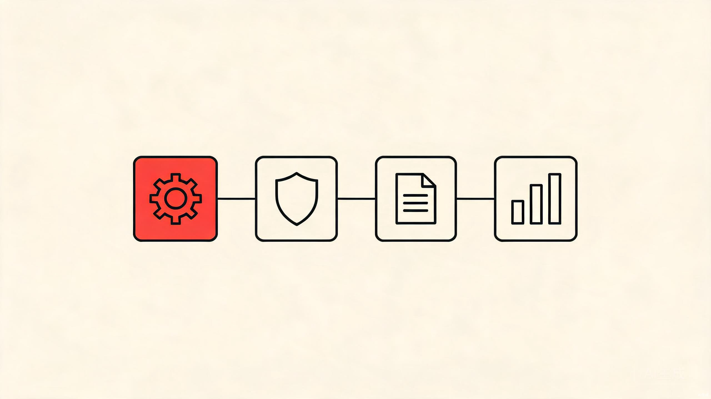
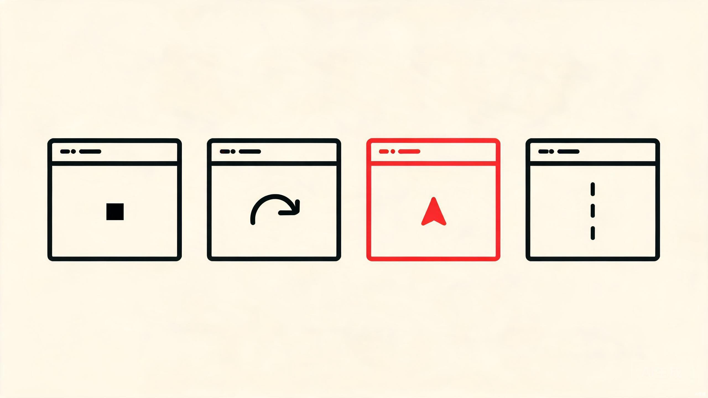

本周 GitHub Trending 呈现出鲜明的「AI Agent 生态化」特征：从代码审查、命令防护到 Office 文档处理、交易决策，AI Agent 正在向开发者工作流的每一个环节渗透。与此同时，开源社区对「Agent 安全」的关注度显著上升，命令拦截、代码图谱等防护类项目集中上榜，反映出开发者在拥抱 Agent 效率的同时，开始系统性地构建护栏。
以下是本周值得关注的几个方向和代表项目。

趋势一：AI Agent 从「单点工具」走向「生态平台」。多个项目都在构建「Agent 即技能」的分发模式。awesome-llm-apps 收录 100+ 可直接运行的 Agent 与 RAG 应用模板，支持 npx 一键安装为编码 Agent 的新技能；DeepTutor 把辅导、解题、测验、研究整合在同一 Agent 循环上；Vibe-Trading 则将量化研究的完整链路封装为可被 Agent 调用的技能。Agent 能力正像 npm 包一样被模块化、可发现、可组合。
趋势二：垂直领域 Agent 深入行业流程。OfficeCLI 作为首个专为 AI Agent 设计的 Office 套件，单二进制即可读写编辑 Word、Excel、PowerPoint，把过去 50 行 Python 才能做的事压缩为一条命令。Agent 不再停留在通用聊天，而是深入到行业 Know-How。
趋势三：Agent 安全成为新独立赛道。destructive_command_guard（5,201 Star，本周新增 1,410）是一个高性能钩子，在 AI 编码 Agent 执行危险命令前将其拦截，支持 10+ Agent，内置 50+ 安全包，亚毫秒级延迟。code-review-graph 则通过 Tree-sitter 解析构建代码图谱，让 AI 只读必要文件，Token 消耗降低约 82 倍。社区已意识到 Agent 自主性的风险，开始系统性构建护栏。
趋势四：「反 AI 味」设计需求浮现。Hallmark（8.8k Star）是一款面向 Claude Code、Cursor、Codex 的反 AI 味设计技能，内置 57 道「slop-test」门控，主动拒绝 LLM 训练数据中的同质化默认样式。用户对 LLM 生成内容的同质化已产生审美疲劳，「让 AI 输出不那么像 AI」本身正在成为一种产品定位。

趋势五：终端编码 Agent 竞争白热化。openai/codex（Rust 重写）、earendil-works/pi（55.6k Star）、archify 等同周上榜。Rust/TypeScript 成为终端 Agent 的主流实现语言，多供应商 LLM 抽象成为标配。openai/codex 本周单周合并 30+ PR，是 OpenAI 对终端编码 Agent 赛道的持续投入。
当 Agent 能力像 npm 包一样可安装、可组合，开发者工作流的每个环节都在被重新定义。
总体来看，本周 GitHub Trending 呈现出清晰的演进路径：Agent 从单点工具走向生态平台，从通用聊天走向垂直行业，从效率优先走向安全并重。对于开发者和创业者来说，Agent 生态的每一层——基础设施、安全护栏、垂直技能——都蕴藏着新的机会。